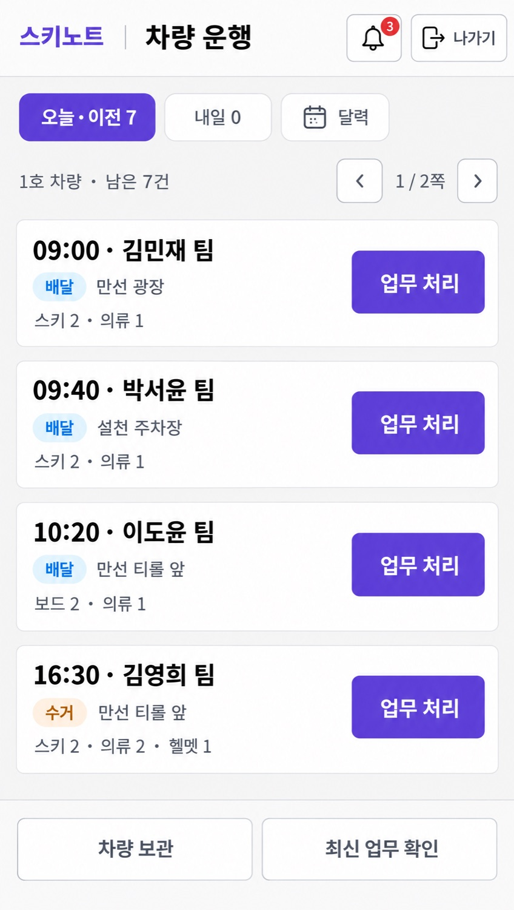
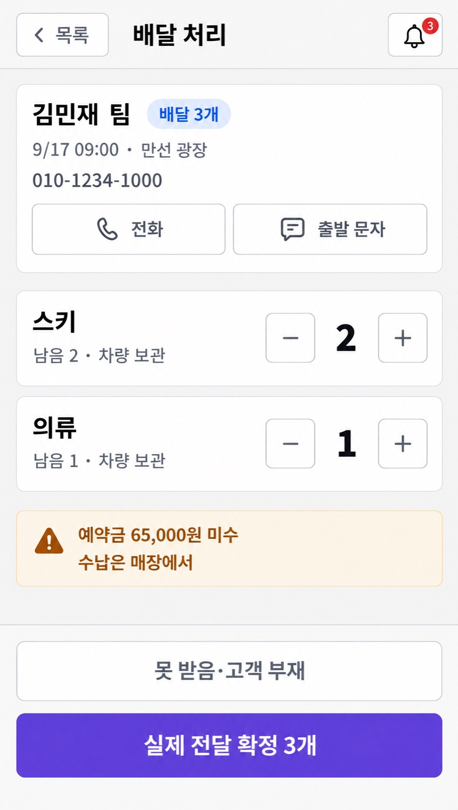
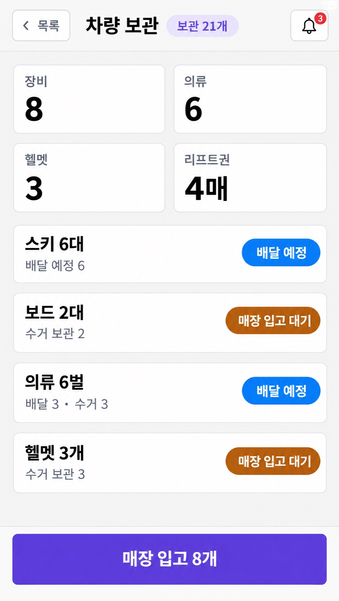
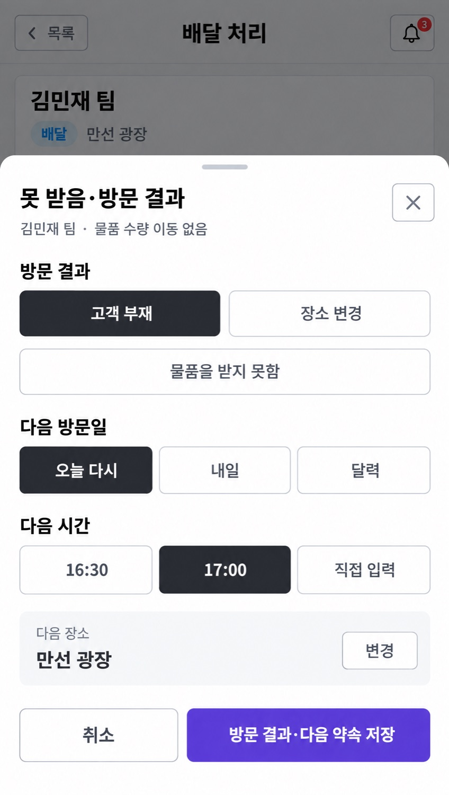
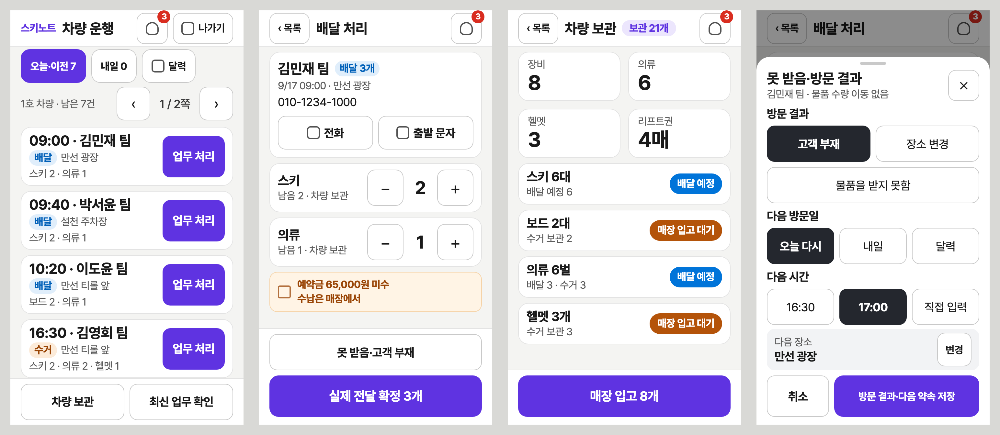

D11 · 통과차량 운행
휴대폰 기준 화면. 한 줄에 업무 하나, 오른쪽에 보라 '업무 처리'. 360×640에서 4줄 + 쪽수.

job da4b1b02-abe6-4b78-b09e-953f7fd243c3 · 힉스필드 원본
D12 · 통과배달 처리
한 팀의 전달 수량을 큰 −/+ 로 고르고, 맨 아래 폭 전체 보라 버튼으로 확정.

job 828ae9b5-b796-4814-acf3-bad8e6a3c2ce · 힉스필드 원본
D13 · 통과차량 보관
지금 차에 실린 물품. 숫자 4칸(2×2)과 품목 4줄, 맨 아래 매장 입고.

job caf57e23-882b-4471-a086-069f51d9ba09 · 힉스필드 원본
D14 · 통과못 받음·방문 결과
휴대폰의 팝업은 아래에서 올라오는 판. 타이핑 없이 선택 버튼으로 방문 결과와 다음 약속을 남긴다.

job 0dd13825-ca16-4dc1-9556-046002eb4943 · 힉스필드 원본
실제 크기 검사 · 360×640요청서의 글자 크기 그대로 그린 네 화면
차량 운행은 4줄이 딱 맞게 들어갑니다(화면이 길면 5줄). 배달 처리는 품목 2종까지 한 화면에 들어가고, 더 많으면 가운데 내용만 움직이고 확정 버튼은 아래에 고정합니다. 긴 팀 이름과 긴 장소는 자르지 않고 두 줄로 내립니다.

390×740 · 412×780 · 품목 3종